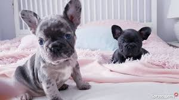

Buldog francuski
Uwodziciel z uszami nietoperza
Buldog francuski to sympatyczny pies małej rasy, który za sprawą swojego ogromnego uroku i przyjaznego usposobienia przekona do siebie w mig każdego miłośnika zwierząt. Mały a korpulentny Buldog francuski ze swoją kompaktową i przysadzistą budową ciała sprawia wrażenie muskularnego i silnego psa.Osiąga wysokość 30 cm w kłębie i wagę od 8 do 14 kg. Szczególną uwagę zwracają na siebie duże, stojące „nietoperzowate” uszy na kanciastej głowie oraz charakterystycznie krótka kufa i ogonek. Błyszczące futro bez podszerstka występuje w przeróżnych odcieniach najpopularniejszych umaszczeń takich jak czarne, białe, kremowe czy moręgowate.
Charakter: charyzmatyczny i ugodowy
Buldogi francuskie mają nieskomplikowaną osobowość i są z natury wesołe, mądre i przyjacielskie, uwielbiają się przytulać i nie są trudne do wychowania. Cenią sobie – przez wzgląd na zadyszki, na które często cierpią – raczej krótkie spacery i praktycznie nie szczekają.Z reguły doskonale dogadują się z innymi zwierzętami, są chętne do zabaw i uważne. Poza tym uchodzą za psy kochające dzieci i nie mają potrzeby udawania się w pogoń za zwierzyną, dlatego też żyją w harmonii z kotem sąsiada czy innym domowym zwierzakiem.
Wszystkie te cechy w połączeniu z rozmiarem buldoga francuskiego sprawiają, że jest on popularnym psem miejskim. Wychowanie Jak wszystkie dogi, tak i buldog francuski potrzebuje twardej ręki – wówczas wychowanie go nie należy do najtrudniejszych.
Należy jedynie pamiętać, że decydującą rolę odgrywa tutaj konsekwencja, nie można pod żadnym pozorem ulegać urokowi tego małego uwodziciela, wówczas na pewno pies będzie wykazywał się posłuszeństwem. Nie chcesz, by Twój buldożek wskakiwał Ci do łóżka – nie możesz pozwolić wobec tego choćby na jedno małe odstępstwo od tej zasady, nawet za szczeniaka, w przeciwnym razie ciężko będzie go później przekonać do zmiany. Szkoła tresury z pewnością będzie stanowiła doskonałą pomoc w wychowaniu i socjalizacji szczenięcia.